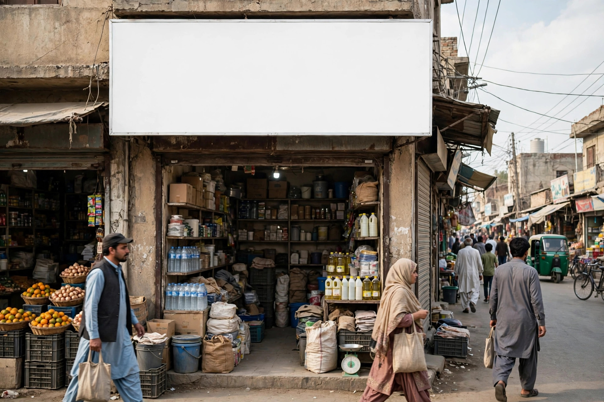

Why Clear Signage Matters for a Local Business
A sign is often the first introduction a customer has to a business. Before anyone speaks to the owner or sees a product, the sign has already created an impression. A clean, readable sign suggests an organised business that cares about its customers, while a faded or confusing sign can make people unsure and move on. In Layyah, where many customers walk or travel past shops on daily routines, this first impression happens many times a day, often without the owner noticing. A well-kept sign also shows the business is open, active, and ready to welcome customers.
Clear signage also saves time for everyone. When a sign states the business name and service plainly, customers do not need to stop and ask neighbours or guess from a window display. They can walk in with a clear idea of what to expect, which makes the conversation inside easier. This matters most for new customers, who have no previous experience of the business and rely on visible clues to decide whether it can help them. New customers especially value this clarity, since they have no past experience to guide their choice.

What a Good Sign Should Show
A good sign shows the business name in large, readable letters and gives a simple idea of the service offered. A short description, such as a general trade or service type, helps a passer-by understand in seconds whether the business is relevant to them. Avoid filling the sign with long lists, small print or decorative words that compete for attention. One clear message, read at a glance, is far more useful than a crowded board that nobody stops to read. Choose one main message for the sign, and leave the finer details for a conversation inside.
The sign should also help customers take the next step. An arrow pointing to the entrance, a note about opening hours, or a visible phone number can turn interest into a visit or a call. Keep these details short and accurate, and place them where they can be seen without blocking the main name. If the details change, update the sign promptly, because outdated information on a sign can confuse customers just as much as no information at all. Check the sign after any change, so customers never arrive with outdated expectations.
Placing Signs Where Customers Actually Look
Where a sign is placed matters as much as what it says. The best position is usually at eye level or slightly above, facing the direction customers approach from, with a clear view that is not blocked by parked vehicles, trees or other boards. Walk past your own shop as a stranger would, from both directions, and notice when the sign first becomes readable. If it only becomes clear when a person is already at the door, it may be too small, too high or poorly placed. Test visibility at different times of day, when light and traffic change.
Inside the premises, small directional signs also help. A simple note showing where to wait, where to ask, or where a particular service is handled can reduce confusion and waiting. Customers feel more comfortable when they know where to go, and staff spend less time giving directions. Good placement, inside and outside, shows respect for the customer's time and makes the whole visit feel smoother from the start. Clear indoor signs also help new staff and helpers guide customers in the same way.
Keeping Signs Clean, Current and Easy to Read
Signs age with weather, dust and sunlight, so they need regular attention. Check your main sign every few weeks for fading, peeling, dirt or damage, and clean or repair it before it becomes hard to read. A sign that looks neglected can make customers doubt the care taken inside the business, even when the service is good. Simple maintenance, such as wiping a board and repainting faded letters, protects the impression your business makes every day. Regular care also prevents small damage from turning into an expensive replacement later.
It is equally important to keep the wording current. If a service has changed, a phone number has changed, or opening hours are different, the sign should reflect that. Remove old notices that no longer apply, and avoid layering new paper over old boards until the result is unreadable. A tidy, up-to-date sign tells customers that the business is active and attentive, which builds confidence before any conversation begins. A tidy sign also reassures customers that the business pays attention to detail.
Matching Your Signs With Your Online Information
Customers often check a business online before visiting, so the sign and the online information should agree. If the business name on the sign differs from the name on the website or business profile, customers may wonder whether they have found the right place. Use the same name, the same general service description and the same contact details in both places. Consistency removes doubt and helps customers move from an online search to a real visit without confusion. Use the same spelling of your business name everywhere customers might find you.
Photos of your shopfront can also help online, because they show customers what to look for when they arrive. A recent, clear photo of the entrance and sign, added to your business profile, lets a first-time visitor recognise the place easily. This is especially helpful on busy streets where several shops look similar. When the online photo matches the real sign, customers arrive with confidence instead of hesitation. Update the photo whenever the shopfront changes, so it always matches reality.
Small Steps to Improve Your Signage This Week
Improving signage does not require a large budget or a complete redesign. Start by standing across the street and reading your own sign honestly, noting anything unclear, faded or out of date. Ask a friend or a regular customer what the sign tells them in five seconds, and listen to their answer without defending it. Their view is closer to a new customer's view than your own, because you already know what your business offers. Honest feedback from a friend is often more useful than a professional opinion at this stage.
Then make one or two small fixes at a time, such as cleaning the board, enlarging the main name, or adding a simple direction to the entrance. Test each change by watching how customers respond over the following days. Over time, these small improvements add up to signage that works hard for the business, guiding customers in Layyah to the right door, at the right time, with a clear idea of what they will find inside. Even a small improvement, noticed by one new customer, can be worth the effort.
Frequently Asked Questions
What should a business sign show first?
The business name in large readable letters, plus a short description of the service, so a passer-by understands it in seconds.
How often should a business check its signs?
Check the main sign every few weeks for fading, dirt or damage, and update the wording whenever services, hours or contact details change.
Should a sign match the business information online?
Yes, the name, services and contact details should be the same on the sign and online, so customers are not confused when they visit.
How can Zaheer Seo Expert help a Layyah business online?
Zaheer Seo Expert, based in Layyah, can help a business present clear, consistent information online so local customers can find and contact it easily.
Want More Customers From Google?
Call 0327 7350830 or email seozaheer14@gmail.com. Zaheer Seo Expert, Layyah - Rajan Shah Road, Rana Nagar, Chak 116 TDA, Pakistan. Open 24 hours.
Get Your SEO Strategy →